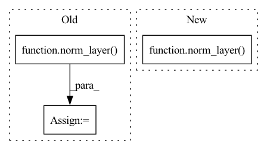

Pattern ID :31183
Before Change
self.make_windows: bool = True
// Init normalization layers
self.normalization_1: nn.Module = norm_layer(normalized_shape=in_channels)
self.normalization_2: nn.Module = norm_layer(normalized_shape=in_channels)
// Init window attention module
self.window_attention: WindowMultiHeadAttention = WindowMultiHeadAttention(
in_features=in_channels,
window_size=self.window_size,After Change
drop=drop,
out_features=dim,
)
self.norm2 = norm_layer( dim)
self.drop_path2 = DropPath(drop_prob=drop_path) if drop_path > 0.0 else nn.Identity()
// extra norm layer mentioned for Huge/Giant models in V2 paper (FIXME may be in wrong spot?)
self.norm3 = norm_layer(dim) if extra_norm else nn.Identity()In pattern: SUPERPATTERN
Frequency: 4
Non-data size: 3
Instances Fragment ID: 91548180
Project Name: feng-lab/pytorch-image-models
Commit Name: c6e4b7895a7dbcd9b98396cbef383dd1c72b0ad3
Time: 2022-02-23
Author: rwightman@gmail.com
File Name: timm/models/swin_transformer_v2_cr.py
M Class Name: SwinTransformerBlock
N Class Name: SwinTransformerBlock
M Method Name: __init__(13)
N Method Name: __init__(12)
M Parent Class: nn.Module
N Parent Class: nn.Module
M File Name: timm/models/swin_transformer_v2_cr.py
N File Name: timm/models/swin_transformer_v2_cr.py
M Start Line: 412
M End Line: 454
N Start Line: 298
N End Line: 342
Before Change
if dilation > 1:
raise NotImplementedError("Dilation > 1 not supported in BasicBlock")
self.conv1 = conv3x3(inplanes, planes, stride)
self.bn1 = norm_layer( planes)
self.relu = nn.ReLU(inplace=True)
self.conv2 = conv3x3(planes, planes)
self.bn2 = norm_layer(planes)
self.downsample = downsampleAfter Change
self.relu = nn.ReLU(inplace=True)
self.conv2 = conv3x3(planes, planes)
if has_bn:
self.bn3 = norm_layer( planes, track_running_stats=False)
else:
self.bn3 = nn.Identity()
self.downsample = downsample
self.stride = stride Fragment ID: 91548197
Project Name: tsingz0/pfl-non-iid
Commit Name: 105497f7e20387f9e7cded89125dbfbf827a8518
Time: 2022-07-26
Author: zhangjianqing@bytedance.com
File Name: system/flcore/trainmodel/resnet.py
M Class Name: BasicBlock
N Class Name: BasicBlock
M Method Name: __init__(10)
N Method Name: __init__(9)
M Parent Class: nn.Module
N Parent Class: nn.Module
M File Name: system/flcore/trainmodel/resnet.py
N File Name: system/flcore/trainmodel/resnet.py
M Start Line: 40
M End Line: 43
N Start Line: 31
N End Line: 51
Before Change
super().__init__(
DepthwiseConv2d(inp, oup, kernel_size,
stride=stride, padding=padding),
norm_layer( oup, eps=bn_epsilon, momentum=bn_momentum) ,
activation_layer(inplace=True),
)
After Change
activation_layer(inplace=True),
]
norm = norm_layer( oup, eps=bn_epsilon if bn_epsilon else BN_EPSILON,
momentum=bn_momentum if bn_momentum else BN_MOMENTUM)
if norm_position == "before":
layers.insert(1, norm)
elif norm_position == "after": Fragment ID: 91548184
Project Name: ffiirree/cv-models
Commit Name: 4c9ed7edb86670cd5f91cf01a8525b25471f1ff0
Time: 2021-07-21
Author: ice_qi@163.com
File Name: models/core/blocks.py
M Class Name: DepthwiseBlock
N Class Name: DepthwiseBlock
M Method Name: __init__(11)
N Method Name: __init__(10)
M Parent Class: nn.Sequential
N Parent Class: nn.Sequential
M File Name: models/core/blocks.py
N File Name: models/core/blocks.py
M Start Line: 285
M End Line: 290
N Start Line: 338
N End Line: 360
Before Change
):
super().__init__(
PointwiseConv2d(inp, oup, stride=stride),
norm_layer( oup, eps=bn_epsilon, momentum=bn_momentum) ,
activation_layer(inplace=True),
)
After Change
activation_layer(inplace=True),
]
norm = norm_layer( oup, eps=bn_epsilon if bn_epsilon else BN_EPSILON,
momentum=bn_momentum if bn_momentum else BN_MOMENTUM)
if norm_position == "before":
layers.insert(1, norm)
elif norm_position == "after": Fragment ID: 91548185
Project Name: ffiirree/cv-models
Commit Name: 4c9ed7edb86670cd5f91cf01a8525b25471f1ff0
Time: 2021-07-21
Author: ice_qi@163.com
File Name: models/core/blocks.py
M Class Name: PointwiseBlock
N Class Name: PointwiseBlock
M Method Name: __init__(10)
N Method Name: __init__(8)
M Parent Class: nn.Sequential
N Parent Class: nn.Sequential
M File Name: models/core/blocks.py
N File Name: models/core/blocks.py
M Start Line: 304
M End Line: 308
N Start Line: 369
N End Line: 395